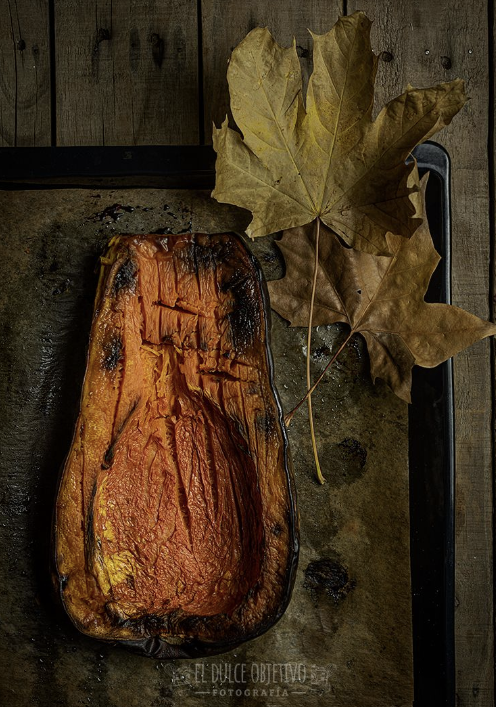

CREMA DE CALABAZA ASADA
Ingredientes:
- 800 gr de calabaza asada ya limpia.
- 100 gr de cebolleta asada.
- 1 puerro asado.
- 150 gr. de zanahoria asada.
- 120 gr de queso Habarti.
- 650 gr. de agua.
- 1 chorrito de aceite de oliva para asar.
- 1 cucharadita de Curry en polvo.
- Sal y pimienta al gusto.
- Mix de semillas para presentar.
Preparación:
- Las verduras las he asado a 220º con calor arriba y acabo y un chorrito de aceite. Como os conté antes, dependerá del tamaño, pero la calabaza ha estado unos 45 minutos y el resto de las verduras 15. Que notemos que están bien cocinadas y blanditas.
- Con nuestras verduras troceadas, las vamos a cocinar con el resto de ingredientes, el agua, el queso cortadito en cuadrados, la sal, la pimienta y el curry. Es verdad que en algunas recetas vemos que se pone caldo de verduras, pero para mi gusto, estropea el sabor de la verdura asada./li>
- Si lo hacemos en thermomix programamos 15 minutos, temp. varoma, velocidad 3.
- Si lo hacemos en una cacerola normal, cocinamos unos 15 minutos cuando rompa a hervir, moviendo de vez en cuando.
- Pasado este tiempo, Solo nos queda triturarlo, en Thermomix Velocidad 10, 1 minuto. Si no, con batidora hasta conseguir la textura deseada.
- Una vez triturada, es cuando me gusta rectificar tanto de sal y pimienta, como de agua, si la queremos un poco menos densa. A gusto del consumidor.
- Servir y poner semillas tostadas por encima que le dan un toque perfecto.
- La decoración blanca, por si queréis triunfar, es un poco de queso crema diluido con una cucharadita de leche, calentado y poniendo pequeños pegotitos y esparciendo con la punta de un cuchillo.
